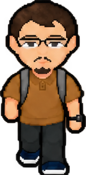
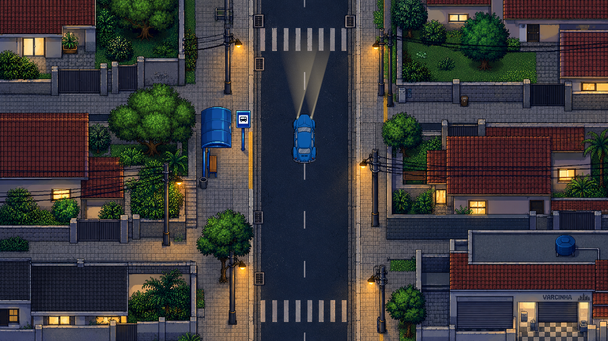
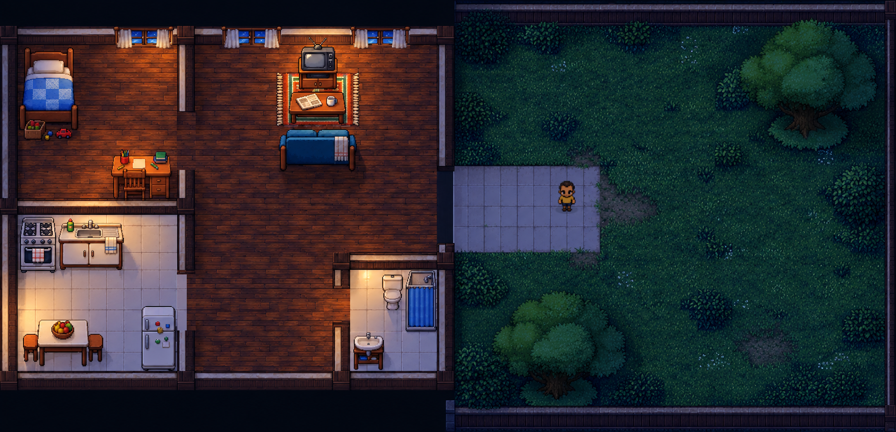
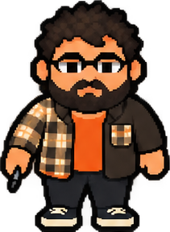
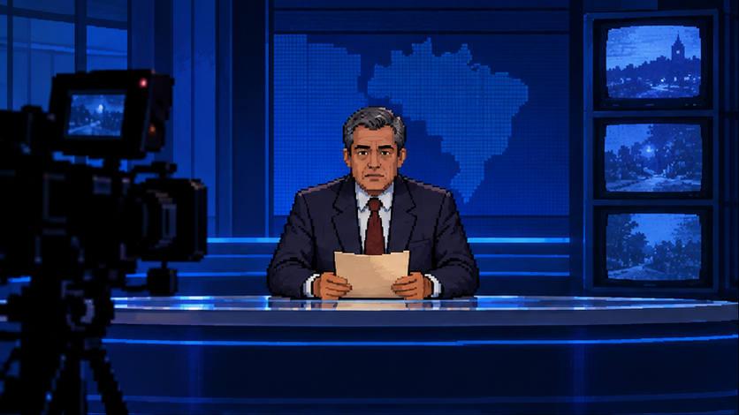

01 / INVESTIGAÇÃO

O PROFESSOR
Edelzio
Uma caixa guardada desde a infância o conduz de volta a uma noite que ele não consegue lembrar.

TERROR SOBRENATURAL • INVESTIGAÇÃO • PIXEL ART 2D
Trinta anos depois, uma caixa reabre
a noite que Edelzio esqueceu.
EM DESENVOLVIMENTO • UM MISTÉRIO BRASILEIRO
01 O JOGO
Em 1996, uma luz no quintal mudou a vida de Edelzio. Em 2026, fotografias, documentos e fragmentos de mapa o conduzem de volta aos lugares ligados àquela noite.
Explore Varginha, conecte pistas e descubra por que o passado voltou a procurá-lo.

Casas, ruas, escola, floresta e capela em uma cidade vista de cima.
Examine com E, converse e consulte documentos, caderno e mochila.
Fotografias e fragmentos conduzem puzzles integrados à investigação.
Conduza o Fusca e enfrente momentos de tensão, perseguição e esconderijo.
O CAMINHO À FRENTE
20 fases planejadas.
Versão atual implementada até a fase 10.
Uma noite da infância. Uma lacuna que permaneceu.
Uma caixa abre um caminho de volta à cidade.
Registros e encontros dão peso às perguntas.
Há lugares onde tudo parece um pouco diferente.
O caminho continua para além dos registros.
PLANEJADOA noite ainda não contou sua última história.
PLANEJADO02 PERSONAGENS
Gente de uma cidade mineira.
Histórias que se encontram.

O PROFESSOR
Uma caixa guardada desde a infância o conduz de volta a uma noite que ele não consegue lembrar.

ENTRE AULAS E REGISTROS
Entre aulas, fotografias e registros, ajuda Edelzio a conferir pistas e preservar evidências.
MEMÓRIAS DA CAPELA
Os registros da capela podem ajudar a compreender o passado. Mas nem toda resposta vem de imediato.
A BIÓLOGA
Investiga amostras e fenômenos que não se comportam como deveriam.
03 GALERIA
Capturas do jogo e material da abertura. Clique para examinar em tamanho maior.
04 CASO REAL — CONTEXTO HISTÓRICO
O Caso Varginha entrou no imaginário brasileiro a partir de relatos de 1996. Depoimentos, cobertura jornalística e investigações oficiais são registros distintos — e devem ser lidos como tal.
FONTES CONSULTADAS EM 04.10.2026
SEM REPRODUÇÃO DE FOTOS OU MATÉRIAS.
O jogo é uma obra de ficção inspirada no contexto do Caso Varginha. Seus personagens, fenômenos sobrenaturais e acontecimentos narrativos não constituem uma reconstrução factual do caso.
05 FICÇÃO — UNIVERSO DO JOGO
Uma amostra do mistério.
Sem respostas prontas.
Documentos promocionais fictícios. Não são arquivos históricos nem soluções dos puzzles.
ARQUIVO DE CONSULTA
Digite help para começar.
Os registros disponíveis são apenas fragmentos.
help · arquivos · status · transmissao

06 VÍDEOS E ABERTURA
A abertura atual tem cerca de 55 segundos: um noticiário fictício, depoimentos, fragmentos de evidências e uma interferência. Então, a casa de Edelzio em 1996.
Pixel art, legendas e som ambiente dão forma aos primeiros instantes da história.
A ABERTURA ESTÁ NO JOGO.
VÍDEOS PÚBLICOS AINDA NÃO DISPONÍVEIS.
07 DESENVOLVIMENTO
Campanha implementada até a fase 10.
20 fases · 6 atos planejados
O jogo está em desenvolvimento. Ainda não há uma versão pública para download.
DIÁRIO DE DESENVOLVIMENTO
Arte, personagens e capturas da versão atual de O Segredo de Varginha.
Fonte pixel: Press Start 2P, The Press Start 2P Project Authors · SIL Open Font License.